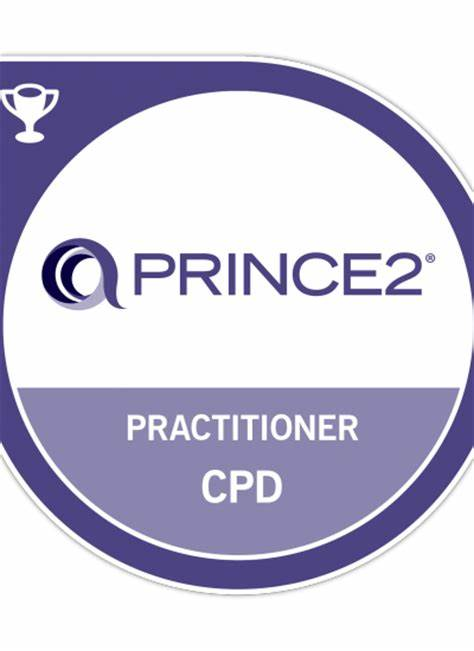
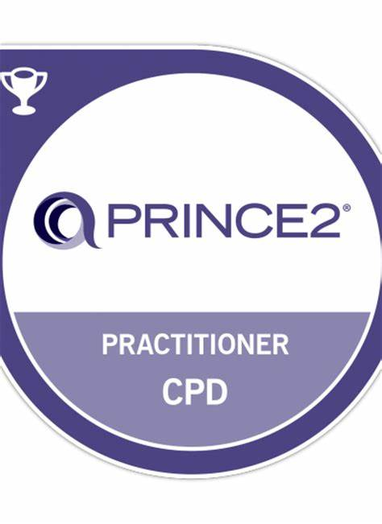
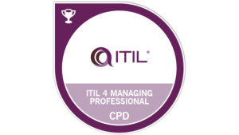
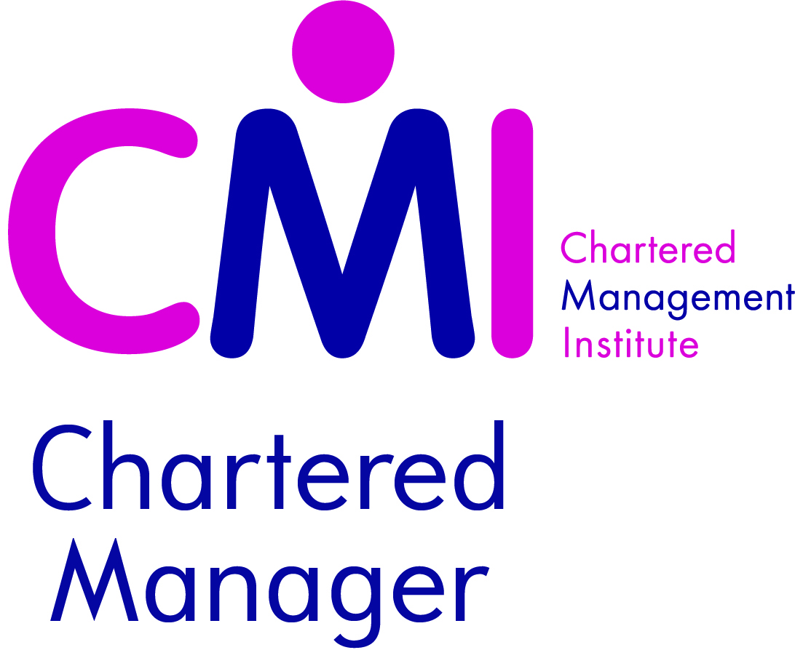

Lee Payne


")
")
 




Hogan Business Reasoning Asessment
Hogan Personality Inventory Asessment
Discovery Insights Personal Profile Asessment
I am an experienced technology leader with experience across the entire technology stack including Windows systems, networking, information security and strategic technology leadership. I am looking for a position which can utilise this broad experience to its fullest. My experience as an operational manager has provided opportunities to develop a detail orientated team culture while still seeing the overall team objectives are fulfilled, I have developed and implemented change initiatives to increase the reliability of the technology stack for our business customers.
If you prefer learning about me by chatting then please feel free to use the bot below to ask questions and learn about me.Experience
Web Environments Manager
Key Responsibilities:
Server, Storage, Data Centre and Open Systems Manger
Key Responsibilities:
Major successes:
Network & Voice Manger
Key Responsibilities:
Major Projects:
Network Engineer
Server Support Engineer
Desktop/Server Support Engineer
Training Courses
Percipio
Percipio
Percipio
Dion Training
Dion Training
Dion Training
Dion Training
Sumologic
Sumologic
Georgetown University
QA
PADI
Cisco
Formal Education
The Open University
MBA Stage 1 Managing Technological Innovation Technology Strategy Strategic Human Resource Management Corporate Finance Project Management The Management Initiative (Capstone Project)
The Open University
Technology Strategy
Technology Strategy Perspectives
Technology planning for strategic position
Entrepreneurship
Learning towards a technology strategy
Power, politics and technology strategy
Culture
Managing Technological Innovation
Environment: opportunity or threat?
Technology, innovation and management
Open innovation
Technology transfer: building value
Eco-innovation
Project management
Managing Technological Innovation Conclusions
The Open University
Exploring management Managing people and organizations Managing financial resources and performance Managing marketing Operational management Evidence Based Initiative
Chartered Management Institute
Being a Leader Description: This unit has been designed for learners who want to develop or sharpen their professional edge and enhance personal effectiveness. Learners will evaluate the impact of an organisations structure and governance on management and leadership. They will explore theoretical models, management and leadership styles and approaches designed to promote a culture of mutual trust, respect and support. >Learning outcomes
Swindon College
Description: This course covered the major aspects of first line management including hiring, performance management and basic budgeting, it was the first management course I had taken and was a good overview of being a front line manager.
University of the West of England
Analytical modelling score: 48 Description: This module covered the discrete mathematics required for the understanding of computer science concepts and to be able to model theoretical constructs. Component based development score: 52 Description: This module covered Java EE, java beans and built on previous knowledge of object based programming to culminate in building a e-commerce book site with the ability for people to leave reviews (including a star rating), buy books and register their details to make checkout easier and faster in future. Computer networks and operating systems score: 62 Description: This module covered the basics of operating systems and networks, the module had me building the various utilities within an operating system (ls, cd, pwd) and ultimately combining these into a custom shell on the OS, This module also covered the OSI model, IP addressing and routing. Computer science concepts score: 77 Description: This module covered the basic concepts for computer science including Big O notation, P vs NP problems, binary arithmetic and basic cryptography Computer systems score: 58 Description: This module covered the very basics of computing and the project for this module involved writing a serial port to serial port communication protocol with encryption using x86 assembler. Computing project score: 75 Description: This was a research based (rather than developing an application) piece of work where I looked at the creation, development and evolution of web crawlers, how they are used by companies to index the Internet and the ultimately built two different crawlers using different indexing methods to determine which would index the Internet the fastest given an arbitrary start point. Data structures and databases score: 54 Description: This module was an introduction to Oracle databases and using it to store information in a efficient way, it examined all aspects of database design to minimise memory and disk usage while still being easily expandable and adaptable. Declarative programming score: 58 Description: This was an introduction to declarative programming using PROLOG and helped to understand the differences and benefits of declarative programming. Design and analysis of algorthims score: 57 Description: This module looked at writing various sorting algorithms in Java (bubble sort, binary sort, quick sort) as well as different storing mechanisms such as binary tree's. Formal language processing score: 76 Description: This module looked at creating intelligent systems using Haskell and LISP, this combined together until ultimately I created a London Underground mapping system to find the quickest route from any two arbitrary points within the network. Industrial placement score: Pass Description: I spent a year working for the NHS in WIltshire and applied some of the topics I had learnt over the past two years in a real world environment. Information systems application context score: 65 Description: This module Focused on the business aspects of technology and involved case studies using private industry and the public sector to discuss what went well, what didn't and why. Interface engineering score: 58 Description: This module was an introduction to user interface design and showed the different ways information can be conveyed to the end user and when different methods should be used. Professional, commercial & legal issues score: 58 Description: This module covered the legal and ethical issues facing computing and required that they were discussed and reasoning given for our viewpoints, the project for this module was a presentation for an ethical business to a group of lecturers acting as angel investors. Program development score: 64 Description: This was an introduction to Java programming and Focused on understanding the language and being able to solve problems in an object orientated model. Software design score: 56 Description: This module focused on how to design software using UML including the backend systems and the user interface. Software engineering score: 48 Description: This module improved upon the first year Java programming module and introduced advanced topics which culminated in writing a vending machine using object orientated principals. Symbolic processing score: 67 Description: This was an artificial intelligence module and covered the history of artificial intelligence, it's future and how AI's are built by providing the symbols that they need to process in order to understand the world. Systems development score: 69 Description: This module was Focused on web technologies and involved writing a fully functioning website for a company using HTML, perl and the UNIX rdb database.
Awards & Certifications
Technical Skills
- Windows Server
- Linux
- Azure
- AWS
- SCCM
- SCOM
- vSphere
- ESX
- F5 Big-IP
- Netscalar
- Azure DevOps
- Octopus Deploy
- Jenkins
- Docker
- Puppet
Non-Technical Skills
- Strategic alignment with organisational goals
- Programme Management
- Architectural experience
- Improving employee morale
- Improving team cohesion
- Improving team performance